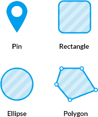

Cog Work's Hot Spot Pod has all the features you need to quickly create, edit and export your image maps. Using the app is super easy and a step-by-step guide is included.
We are introducing Pod Builder - a content builder that lets you add rich content and media to the tooltips of your image map.
Cog Work's Hot Spot Pod allows you to draw custom shapes. You can also customize pins, icons, rectangles, and ellipses.
That’s right, 150 high-quality SVG icons bundled in the Editor. And if you still can’t find that special icon you need, you can also use your own image.
With the Editor you can customize properties like opacity, fill, stroke and corner-radius to match the design of your course or project. You can also have separate styles on mouseover!
Cog Work's Hot Spot Pod is made to properly handle touch events. And if you have a lot of content in your tooltips you can make them fullscreen on mobile devices.
Shapes can be links. Tooltips can be made to appear on mouseover or click - whatever works best in your case. You can also turn the tooltips off completely!
Cog Work's Hot Spot Pod comes with an API that you can use to code custom functionality for your image map. For example, you can show a tooltip by default, or run javascript when a user clicks on a shape.
We are here to help!
Our support staff are ready and able to assist with any trouble (technical or otherwise) that you might run into while using Cog Works, or one of our features. We are as far as a phone call or email.